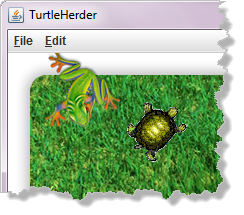
In previous chapters you've learned how to animate individual objects and how to respond to mouse and button click events. Now that you know how to use arrays, though, you can
animate a whole screenful of critters. To see how that
works, and to teach you about responding to keystroke
events, we're going to create a simple video game
named TurtleHerder.
The TurtleHerder Game
The idea behind the game is
pretty simple. You have a lawn with a herd of turtles wandering
randomly. If they wander off of the lawn, the turtle dies and you
lose a point. Your job is to direct the turtles into the pen that
you've constructed, where they'll be safe.
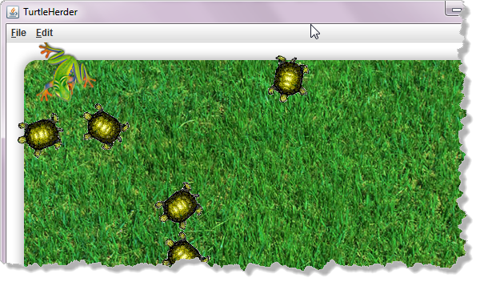
To control the turtles you need a turtle herder. Of course, if they were sheep, we'd just grab a sheep-dog. However, since they're turtles, they simply ignore sheep dogs. To help you out, though, you have a turtle-frog, which you can control with your arrow keys.
Setting the Scene
I've placed the starter files and images in the chapter's code folder. Go ahead and use DrJava to open TurtleHerder.java and run it. As you can see, except for the window itself, which I've adjusted using two constants at the bottom of the screen, your game is completely empty.
Our first step is to place the lawn on the screen. We can do that
inside the init() method. The images
folder contains the file lawn.png, which you can load
and place on the screen as a GImage():
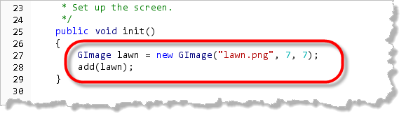
Notice that since I've placed lawn.png in the images folder, we don't need to specify the folder name when we construct theGImage object; the GImage
constructor, automatically searches that folder, looking
for the file.
Note also that I've specified a fixed offset from the top and bottom
to place the lawn where I want on the screen. Go ahead and run it
at this point, and you should see the lawn nicely placed
on the screen.
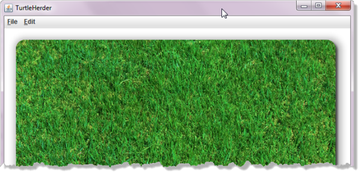
Adding the Herd
We'll represent our herd of turtles by creating an array of
GTurtle objects. GTurtle is one of the
classes in the ACM library.
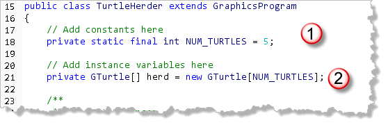
To do that:- Create a constant,
NUM_TURTLESrepresenting the number of turtles in the herd. For right now, let's start with five turtles. - Create and instantiate an array variable,
herdthat containsNUM_TURTLESGTurtlereferences.
Because GTurtle is an object type, the array that
herd refers to will contain null
GTurtle references, not GTurtle
objects. You'll need to create the turtles that live
in the array inside your init() method.
Note also, because we'll be animating all of the turtles in
the herd, that we need to make herd an
instance variable, not a local variable, so that
we can access the elements from the advanceOneFrame()
method.
Creating and Placing the Herd
Inside the init() method we need to
populate the array by creating a GTurtle
object, placing its reference in one of the herd
elements, and then placing the turtle on the lawn.
You'll recall that when we want to initialize an object
array, we use the standard for loop
array initialization idiom along with object instantiation
of each element, like this:
for (int i = 0; i < herd.length; i++)
{
herd[i] = new GTurtle();
// other initialization
}
As we create each turtle, we'll want to point it in
a random direction. I'd also like all of the turtles
to be arranged in a circle, pointing towards the center.
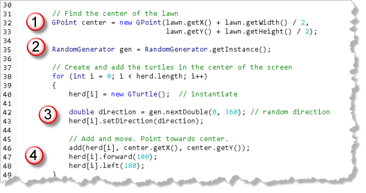
To do that we can:- create a
GPointvariable to represent the center of the lawn. - get a
RandomGeneratorinstance and generate a random direction. (Note, that we'll want to create the random number generator outside of the loop.) - use the
setDirection()method to apply the new random direction. - Once we've done those steps, we can add the new turtle to the center of the lawn, move it forward (in its random direction) 100 units, and finally, turn it around 180 degrees, so it's pointing back where it came from.
Here's what the lawn looks like when it runs. Of course
your turtles will be at random locations around the
center point.
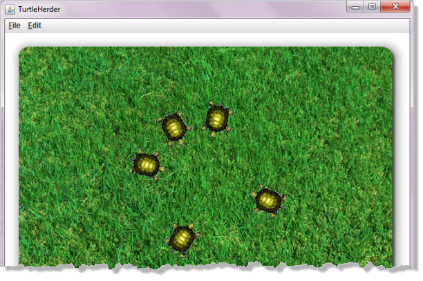
Move 'em Out
Now, we want to get the turtles moving on the screen. To do that, we'll add our generic animation loop by:
- creating a
FRAME_RATEconstant set to 30 FPS. - adding an endless loop inside the
run()method that callsadvanceOneFrame()and then callspause(FRAME_RATE). - adding an empty
advanceOneFrame()method so that the code will compile.
Here's what your code should look like at this point:
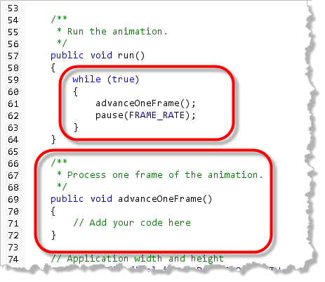
I haven't showed you the FRAME_RATE constant,
because I declared it up at the top of the file with the
other constants.
If you go ahead and compile and run, you'll see that nothing happens. What we need to do inside the frame method, is to move each turtle in the array by some amount. To simplify things, I'll just move each one forward by 2.
Here's the code you should add:
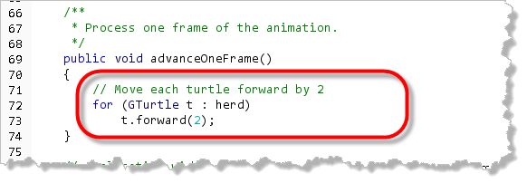
Go ahead and compile and run after adding this and you'll see that the turtles move forward and eventually off of the lawn altogether. Of course, seeing as they're turtles, they move kinda
slow. So you don't spend the rest of the semester
waiting for your herd to move off screen, add this
line to the init() method, inside
the loop where your turtle is instantiated.
herd[i].setSpeed(1.0); // maximum speed
Of course, as you can see, nothing happens when the turtles
leave the lawn. We'll tackle that problem next.
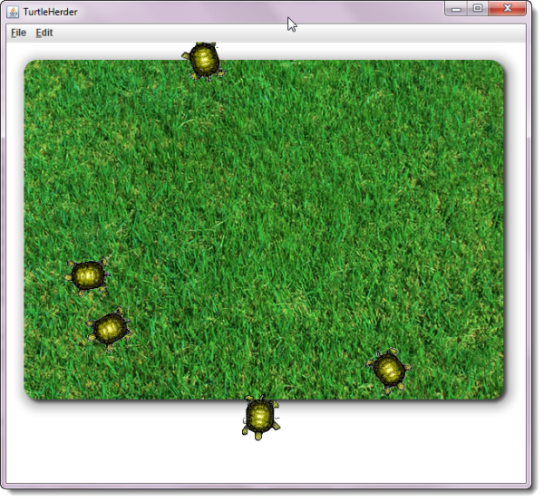
Collision Detection
A few chapters ago, when you first learned to bounce a ball around the screen, you were introduced to the idea of collision detection. To make sure your ball didn't leave the screen, you checked its coordinates against the screen coordinates and then adjusted the horizontal and vertical velocity accordingly.
The principle is the same with our herd of turtles; the only difference is that
you need to do it for each turtle, instead of with just one
breakout ball. Also, instead of using the screen coordinates, we'll use the
coordinates of our lawn object.
Staying On the Lawn
To mark the boundary of the area where we want to contain our turtles, we'll use the technique of a collision rectangle. By creating an in-memory rectangle and then checking if it contains our turtle, we can avoid checking the four separate comparisons that were necessary with the Breakout game.
Our first step is to create the rectangle. We'll use the ACM GRectangle
class, which is almost identical to the AWT Rectangle class, except that
its coordinates are all double values, instead of int.
- Start by creating a
GRectangleinstance variable namedlawnRect, and anintvariable namedturtleSizelike this:
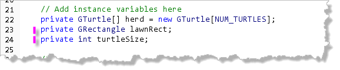
- To initialze the variables, we need to add a couple of lines of code in the
init()method, following the loop that initializes the herd of turtles (because we need to ask the first turtle in the herd its size.) To initialize the collision rectangle, just use thelawn'sgetBounds()method, like this:
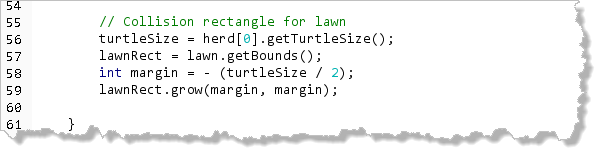
After initializinglawnRectwe want to shrink it by half the size of a turtle to simplify our calculations. The easiest way to do that is to use theGRectangle'sgrow()method, passing it a negative number (half the size of a turtle in this case), to cause it to contract on all four sides.
To actually use the new collision rectangle, return to the
advanceOneFrame() method, add some braces around your loop,
and then test to see if the turtle is still on the lawn after
it moves.
Check to see if the turtle is on the lawn by calling it's getLocation()
method, which returns a GPoint, and passing that to the
lawnRect's contains() method. If the answer comes
back true, then the turtle is on the lawn; if not, then
the turtle has wandered off, and needs to be turned around.
Here's the code that simply turns checks to see if it bounced off the top
or bottom, or, if it bounced off one of the sides, and then adjusts the
turtle's direction accordingly:
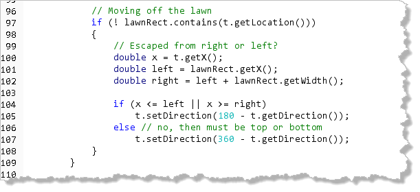
You might recognize this code from the PolarBounce program, in our first lesson on animation. Once you've added this code, run your program, and you'll see that the turtles now all stay on the lawn.Turtle-to-Turtle Collisions
Even though the turtles stay on the lawn now, they still walk right over each other. (Technically, they walk right thorugh each other, but that's kind of a quibble.)
To institute turtle-to-turtle collision detection, we need to compare the turtle that is moving with every other turtle, and then deflect both turtles if they have collided. Of course, that requires a nested loop! This loop needs to appear after the loop that moves your turtles and checks to make sure they appear on the lawn.
Here's the basic idea:
- Grab the first turtle and compare it with all of the rest of the turtles in the array, starting with the second.
- Do the same thing with all of the remaining turtles, except for the last. However, when you get to your second turtle, you no longer need to check to compare it to the first, since you already did that on the first trip through the loop.
That means that the basic loop skeleton will look like this:
for (int i = 0; i < herd.length - 1; i++) // 0 to len-2
for (int j = i + 1; j < herd.length; j++)// j starts at i + 1
// check for collisions here
Inside your loop, check for turtle-turtle collisions, and, if they collide, you can simply "bounce" them off each other by changing their directions.
Here's the code to do that:
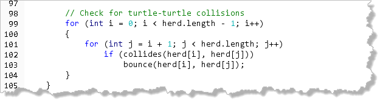
Notice that this code is after the previous loop, but still inside theadvanceOneFrame()
method.
Instead of putting the actual code for colliding and bouncing, I've called
a pair of user-defined methods, to make the loop a little simpler and
easier to understand. Let's look at those now.
When Turtles Collide
We'll say that two turtles have collided if the distance between their
centers is less than the size of the turtle. The ACM GMath
class has a distance() method that does this calculation
for us (although we could do it manually, using the Pythagorean Theorem
easily enough).
Here's the code for collides() method which you can add to
your program below the run() method:
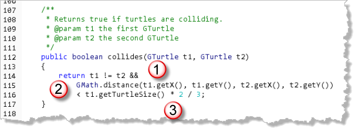
Notice that the method:- First checks to make sure that
t1is not equal tot2. Since the simplifiedforloop visits each element, we don't want to check to see if one of the turtles collides with itself. Because of the&&operator's short-circuit evaluation, if the two parameters refer to the same turtle object, the method simply returnsfalseand goes no further. - Using the
GMath.distance()function and thegetX()andgetY()methods in theGTurtleclass, we see how close the two turtles are. - If the center of the two turtles is less than two-thirds of
the turtle size, we'll return
true. If the turtles were perfectly round, using the turtle size itself would work, but because they aren't it makes it look like they are bouncing when still a little ways apart.
Bouncing Turtles
When two turtles get too close to each other, we can bounce them in the opposite directions, simply by "swapping" their directions, using the same algorithm you learned when shuffling arrays earlier.
Here's the code:
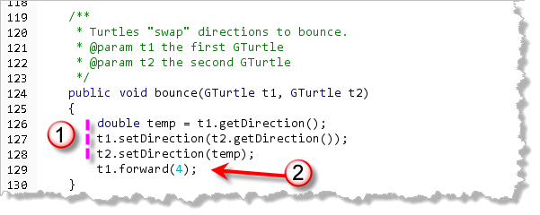
Notice that after swapping directions (1), I move one of them a little to avoid setting up a "vibrating" effect the next time through the loop (2), in the event that the next frame doesn't move them far enough apart.Fighting Turtles
As an alternative to simply bouncing the turtles, you might want to
have them interact with each other in a more complex way.
The user-defined fight() method is another simulation that
shows what happens when turtles get too close to each other; it's
an effect that I like, but feel free to make your own modifications:
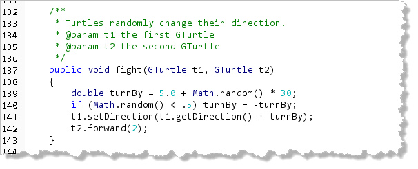
In this code:- We generate a random number between 5 and 34.9 and then "flip a coin"
to decide if it should be positive or negative. (The code
Math.random() < .5is true about 50% of the time.) - We then point the first turtle in a new direction by adding this random number to its current direction.
- Finally, the method moves the second turtle forward 2 pixels to move it out of the way for the next iteration.
If you run the program now, you'll see that the turtles all stay on the lawn, but they also chase each other around if they happen to run into another turtle.
Frogs and Keyboard Events
To turn our program into a game, we'll need a couple more players:
- The gate that the turtles have to pass through to leave the lawn.
- The turtle herder, whose job it is to direct the turtles through the gate.
- A clock and and a counter that can keep track of how long it's taken you to get your turtles into the pen.
Let's start with our turtle-herder, the famous TurtleFrog.
The Turtle Frog
To create the turtle-herder, use the image frog-up.png
and add a new GImage instance variable named
herder, like this:
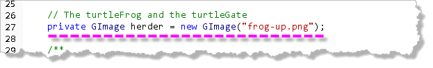
Then, inside theinit() method, add your herder to the
center of the bottom of the screen, about 30 pixels up from the bottom,
like this: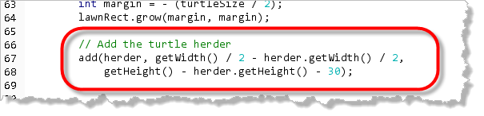
Run your program and you'll see your turtle-herder waiting for you to put it to work.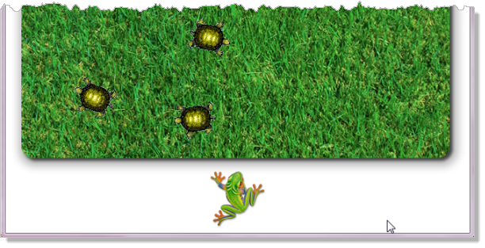
Let's start with the gate that the turtles have to pass through.
Controlling the Frog
Instead of using the mouse, we want to control the from by using
the arrow keys on your keyboard. To do that, just add these lines
to the end of your init() method:
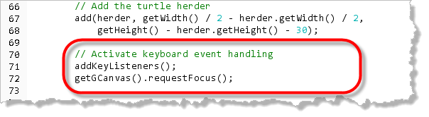
This should look familiar, since you did something almost identical to activate mouse events in your previous applications.The second line is necessary here to "give the keyboard focus" to your program when it first begins. If you omit this line, then your program will still work, but you'll have to click it with the mouse before using the keyboard.
Once you've activated "keyboard listening", just as you did with mouse events, you respond to keyboard events by writing an event-handler method.
Keyboard Events
There are three different event-handlers you can write to
respond to keyboard events: keyPressed(),
keyReleased() and keyTyped(). All
three handlers take a KeyEvent parameter, which
you'll use to to find out which key was pressed.
To control our turtle-herder, we'll use the keyPressed()
method to control our turtle-herder. Here's the basic skeleton to
add to you program:
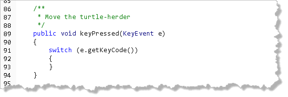
The keyTyped() method is used for "higher-level"
keyboard processing, when you want to know which character would
be typed into a text-area, for instance. With keyTyped(),
you'll use the KeyEvent's getKeyChar() method
to determine the specific Unicode value typed at the keyboard. With
keyPressed() and keyReleased() we are only
concerned with the physical keys that are pressed, so we use
getKeyCode() instead.
Key Codes
The actual key-codes you'll use are constants inside the KeyEvent
class. All of these named constants start with VK, which stands
for "virtual key". The four we're interested in are KeyEvent.VK_UP
and KeyEvent.VK_DOWN (the up and down arrows), along with
KeyEvent.VK_LEFT and KeyEvent.VK_RIGHT
(the left and right arrows).
We can put those into our switch statement like this:
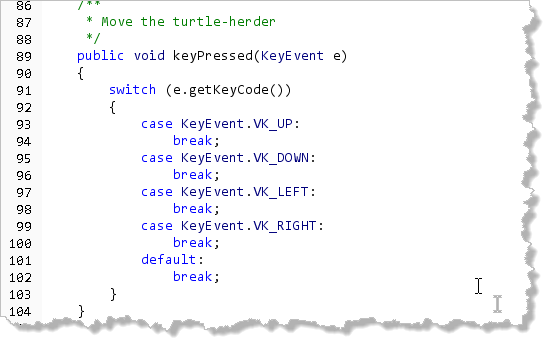
Frog States
It's tempting, now that we've captured the user's keystrokes, to just move the frog left or right or up or down in response to the arrow pressed. Unfortunately, this is a little too simplistic, and makes the game action really jerky, since the user has to keep pounding on the keys to move the turtle.
What we want to do instead is simply set the state of the frog's movement inside the key handler, and then do all of our movement in the main animation loop as always.
Here's how to do that:
- Create five
intclass-wide constants namedSTOPPED,NORTH,SOUTH,EAST,WEST. Set each to a different value. (It doesn't matter what the values are.) - Create an
intinstance variable namedherderStateand initialize it toSTOPPED, like this:
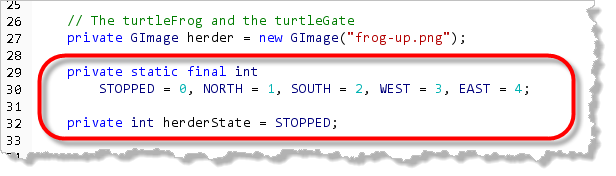
- Inside your keyboard event-handler, set the value of
herderStateinside each of the different case blocks, like this:
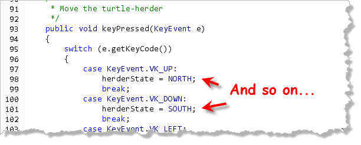
Finally, once you've done that, you need to add a switch
statement to the beginning of your animateFrame() method to move the herder based
on its current state. Here's some code that does that:
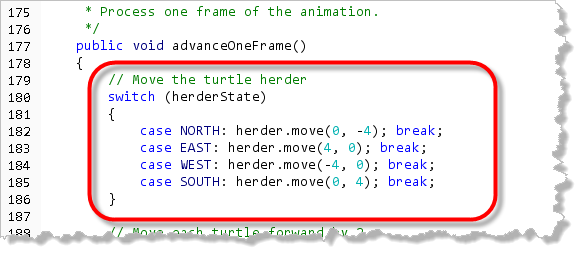
Run the program and you'll see that the frog moves in the direction you press the arrow keys. Press any other key and the frog pauses.Frog Images
Even though the frog now follows the arrows, it still faces the same
direction. We can fix that by changing the image used any time that
the frog switches direction. The images that I've supplied have the
names "frog-right.png", "frog-left.png",
"frog-up.png" and "frog-down.png".
Add an if statement to each of the even-handler case
blocks and switch the image if necessary, like this:
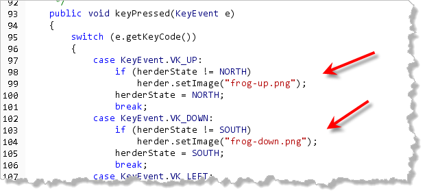
Now when you start moving East (for instance), the frog faces the direction that it's moving.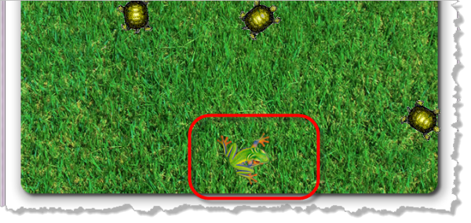
Herding the Turtles
To actually control the turtles, you now need to handle herder-turtle collisions as well as turtle-turtle collisions. We'll check for those collisions right after the turtle-turtle collisions.
Here's the code you need to add:
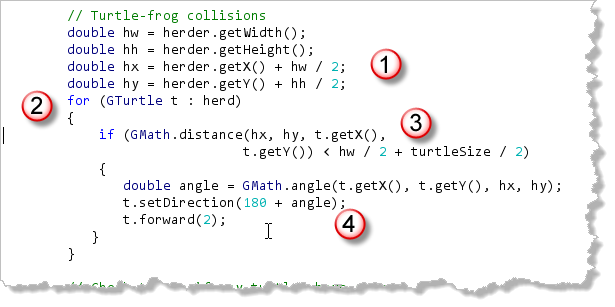
Here's what the code does:- First, we need to find the center
of the turtle-herder image. Since our turtle-herder is
a
GImageobject, it'sx,ycoordinates represent the upper-left corner of the image. To find the center we just do a few calculations, as shown here. - Now that we have the center of the frog, we can write a loop that visits every turtle in the herd. That's the easy part.
- Inside the loop we need to see if the turtle and
the frog are colliding. One easy way to do that is to
use the
GMathdistance()method which uses the Pythagorean Theorem to find the distance between the center of the frog and the current turtle. If that distance is less than half the turtle width plus half the herder width, then the players are too close. - We want the turtle to respond by running in the opposite
direction from the frog, just like a real herding situation. To
help out, we can employ another
GMathmethod,angle(). Once we know the angle between the frog and turtle, we can just send the turtle off in exactly the opposite direction.
The Turtle Gate
For the turtle gate, towards which your
herder will try to move your turtles, I've grabbed another image which we'll
use to initialize an instance variable, like this:
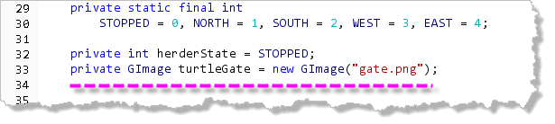
and then place in the lower-right corner of the lawn's bounding rectangle, like this: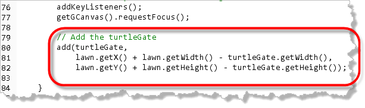
Here's the lawn with the gate added: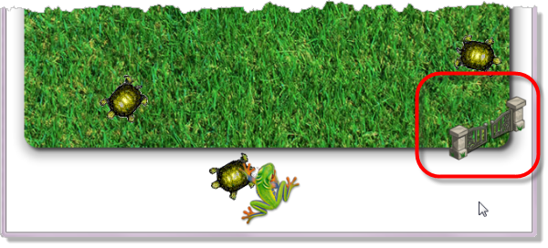
Through the Gates
To check for turtle-turtle-gate collisions, we'll need to add another
fragment of code to our advanceOneFrame() method. This is
the last thing we'll check for:
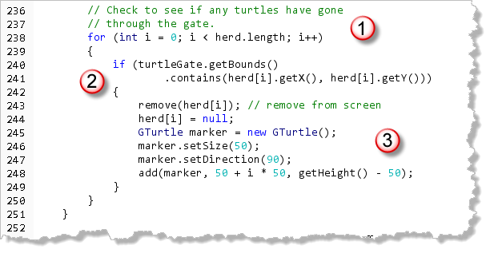
Here's what this portion of code does:- We start with the regular loop that visits every
turtle in the herd. When a turtle goes through the gate, we'll need
to remove it from the herd, so we need to modify the actual
array. That means we can't use the simplified
foreachloop we've used previously. - Rather than using a more complex and realistic algorithm,
we'll just check to see if our turtle is withing the bounds of the
GImagerectangle and count that as good enough. - Once we get a turtle going through the gate, we need to
do several things.
- We need to remove the turtle object from the application's
canvas. We do that with the
remove()method. - We also need to remove the turtle from the herd itself.
Of course, since arrays are fixed-size collections, we
can't do that, so, as an alternative, we set the
reference in the array to
null. - Then, we want to make some kind of "marker" that indicates one of the turtles has "moved into the corral". The last four lines in the loop do that.
- We need to remove the turtle object from the application's
canvas. We do that with the
When you add this code, compile and run, you'll see that when a
turtle is herded into the gate, it disappears off the lawn and
reappears as a marker at the bottom of the screen:
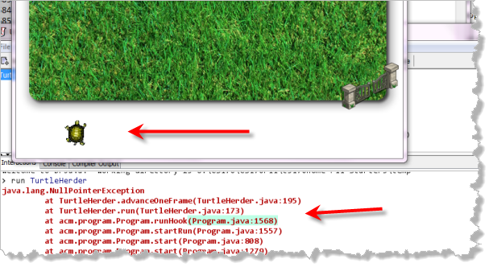
Unfortunately, your program also crashes as soon as the first turtle goes through the gate. Not good.Ghosts of Turtles Past
If you track down the crash in the stack-trace printed in DrJava's
output window, you'll see that it relates to moving or calling other
methods on a GTurtle object, once that turtle's reference
has been set to null.
To fix this, all we have to do is locate every loop
that traverses the herd inside the advanceOneFrame()
method, and add a continue at the top of the loop, when the
current turtle is null. Here's the code I've added to
the first loop:
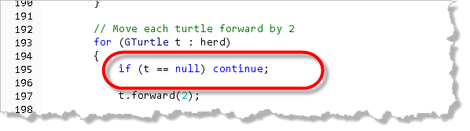
You'll need to do this for all of the remaining loops, including the nested loop that handles turtle-turtle collision.Finish Up
Well, that's as far as I'm going to take you with TurtleHerder. You're on your own to add scoring, timekeeping, and maybe some buttons to restart the game once all of the turtles are safely in their pen.